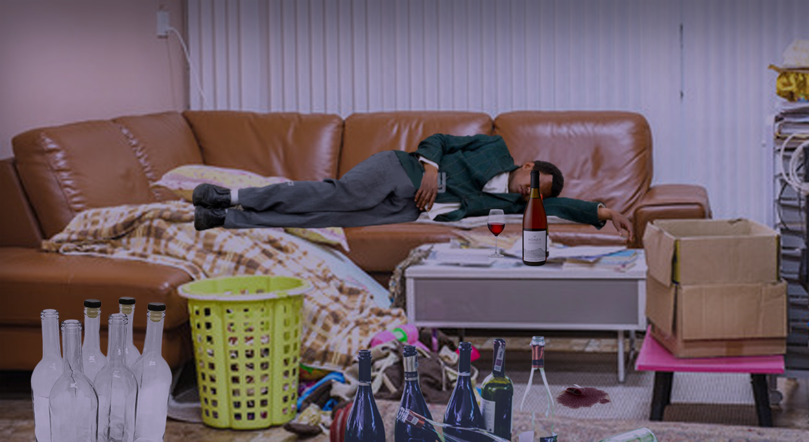

De opdracht
Voor de beeldtaal moet ik aan de hand van beelden een boodschap laten vertellen. Er waren drie opdrachten die ik moest doen. De eerste opdracht was dat ik drie visuals op basis van een object samenstellen die drie verschillende context laten zien. Het object die ik had was een fles wijn waarvoor ik verschillende heb ervan gemaakt. De eerste sfeer ging over een romantische diner tussen een stel. De tweede context was gezelligheid met vrienden in een groep. En de laatste context was war donker, het ging over het wijn verslaving. De tweede opdracht moets ik een beeldanalyse maken van een bestaande bewustingcampage poster van organisatie zoals amnesty international, greenpeace enzovoorts. Ik heb een poster gebruikt van de stichting moms action: gUn sense in America. Het ging over de negatieve massa schieten op scholen. De poster zelf ging over de dat de politicus streven om de verkeerde ding te verbannen. Ik heb daardoor een eigen anlayse gemaakt met het theorie die ik heb gekregen tijdens die les. Bij de laaste opdracht heb ik zelf een bewustwordings poster gemaak aan de hand van de inspiratie die ik had opgedaan tijdens mij bezoek bij Trpenmuseum De thema die ik heb gekozen gingen over Cultuur appropiatie, dus ik heb dan een poster daarvan gemaakt om mensen bewust te maken.
Mijn projecten

- 